Guatemala, which I explored in August 2026, is the beating heart of the Maya world, and it delivered two of my Central America trip's finest experiences at opposite ends of the spectrum. First came the ruins: the towering temples of Tikal, rising out of the jungle, which my parents and I explored over several days from the little island town of Flores. Then came the journey itself. To reach the colonial city of Antigua, I rode a camioneta, one of Guatemala’s gloriously repurposed and repainted American school buses, careening down the highway while vendors and passengers came and went. Ancient temples and a rattling chicken bus turned out to be an ideal way to get a taste of a country this rich.
My two bases could hardly have been more different. In the north I stayed on the island of Flores, a jewel of colourful houses on Lake Petén Itzá, connected to the mainland by a causeway. There is deep history beneath its charm, for this was the site of Tayasal, the last independent Maya kingdom, which held out against the Spanish until 1697. In the highlands I stayed in Antigua, the graceful former colonial capital of all Central America. This UNESCO World Heritage Site features cobbled streets, baroque churches, and earthquake-shattered ruins, all watched over by the perfect cone of the Volcán de Agua. Antigua's grandeur is precisely why it was abandoned as a capital, after a catastrophic earthquake in 1773 finally persuaded the Spanish to relocate their government to modern Guatemala City.
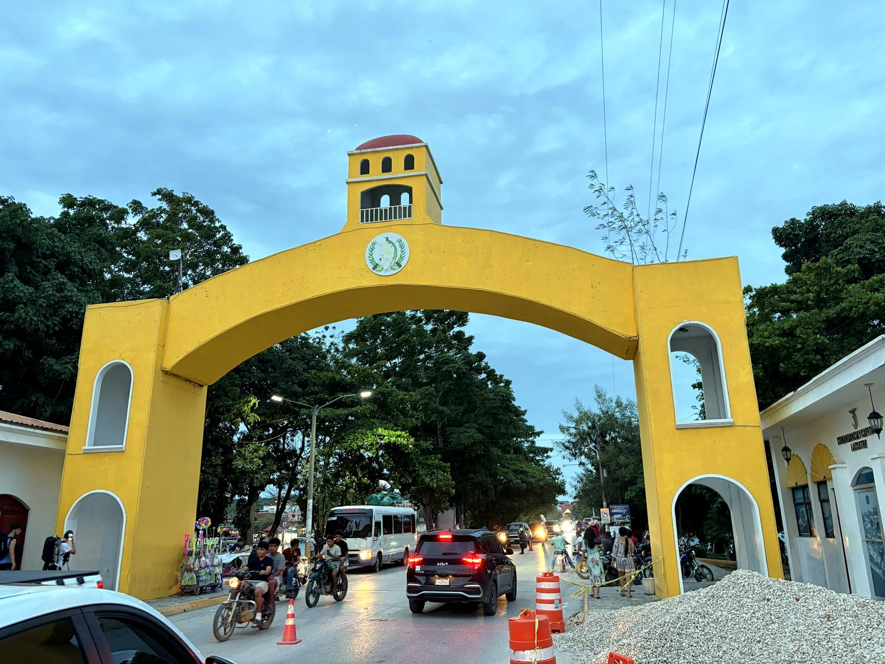
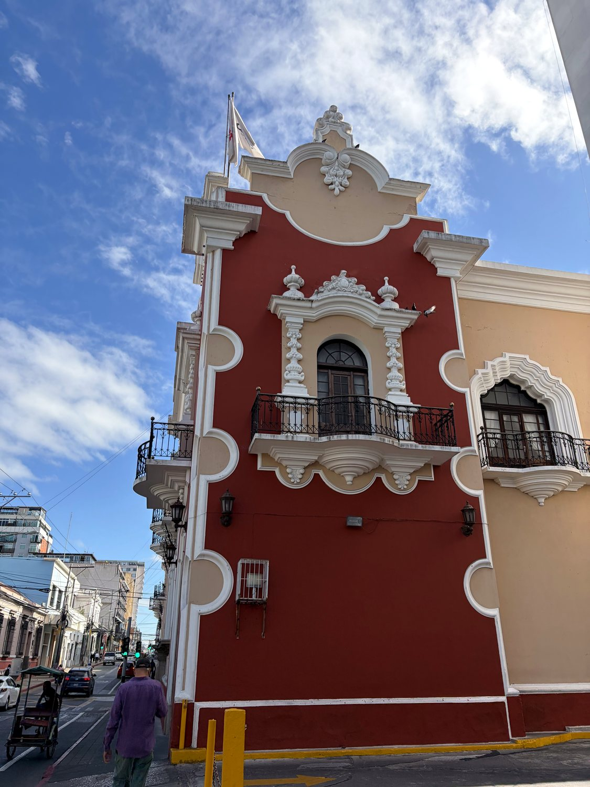
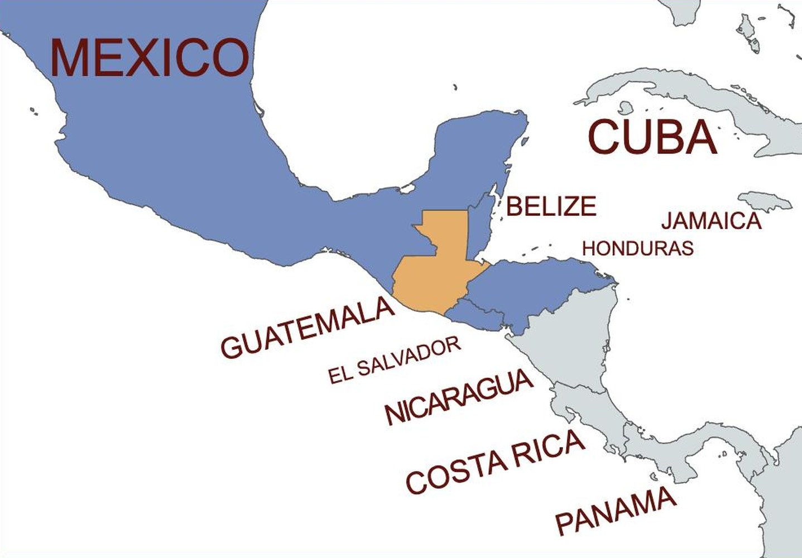
Guatemala was the core of the Classic Maya civilization, and Tikal was one of its supreme cities, a superpower that dominated the region for centuries before the mysterious Maya collapse scattered these great centres back into the jungle around 900 AD. When the Spanish arrived under the ruthless conquistador Pedro de Alvarado in 1524, they made Guatemala the seat of their power in the region, governing a vast Captaincy General that stretched across Central America. The colonial society they built was rigidly stratified, layering a small European elite over a large and enduring Indigenous Maya population, a divide whose consequences would echo for centuries.
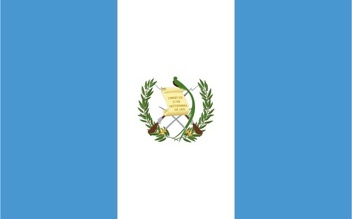
That inequality helped fuel one of the darkest chapters in modern Latin American history. After a US-backed coup toppled a reformist government in 1954, Guatemala descended into a 36-year civil war that ended only in 1996. The conflict killed some 200,000 people, and a UN-backed commission later concluded that the army had committed acts of genocide against the Maya population. Today Guatemala is the most populous nation in Central America and home to its largest Indigenous community, with Maya languages and traditions still vividly alive. The national flag is colored in sky blue and white, and is centered on a resplendent quetzal, Guatemala’s national animal whose name lends itself to its currency. Legend holds that this bird loves freedom so much that it cannot survive in captivity.
Tikal is simply magnificent, and it is easy to see why it ranks among the greatest archaeological sites on earth. Its grey limestone temples rise in steep, dizzying steps above the treetops, piercing the endless green canopy of the surrounding rainforest. We spent hours wandering the great central plazas, flanked by the Temple of the Great Jaguar and its twin, among coatis snuffling for fruit and troops of monkeys crashing overhead. The most famous view is from atop Temple IV, the tallest of them all, where a cluster of temple summits pokes through the forest. Fans of a certain film franchise will recognize it instantly, since it doubled as the rebel base in the original Star Wars, and lining up my own photograph with that iconic shot was a small, giddy thrill. Tikal stood out to me far more than Chichen Itza due to its authenticity, vastness, and remoteness. It was a good reminder of just how massive the Maya civilization was, and makes one wonder how it declined.
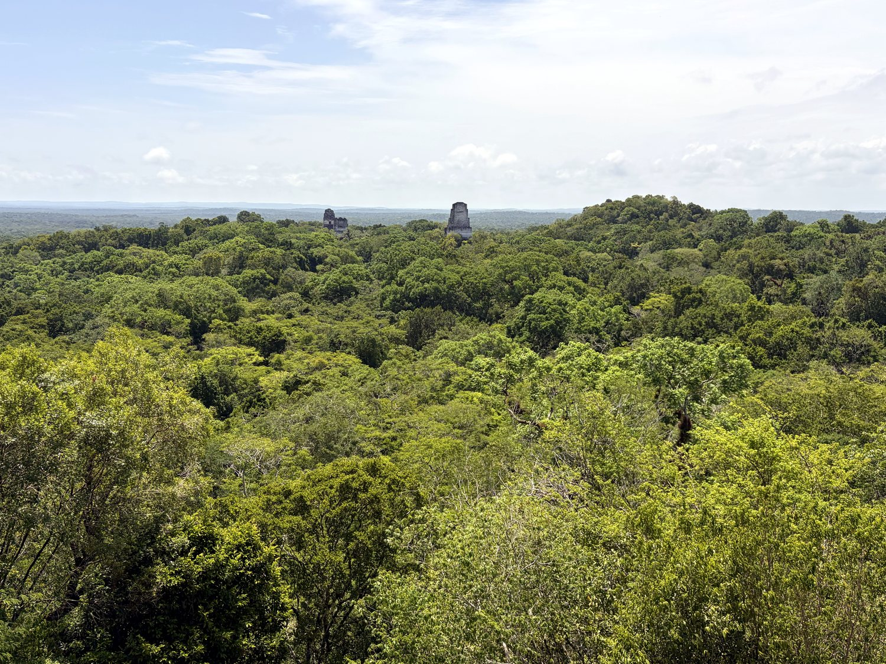
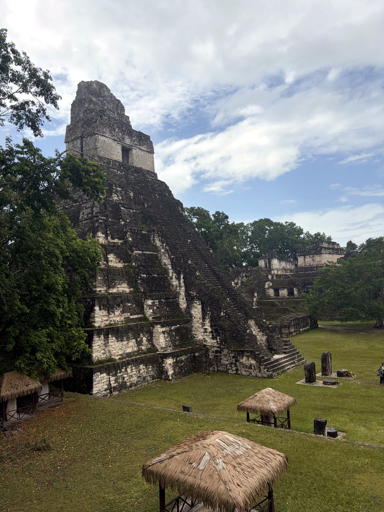
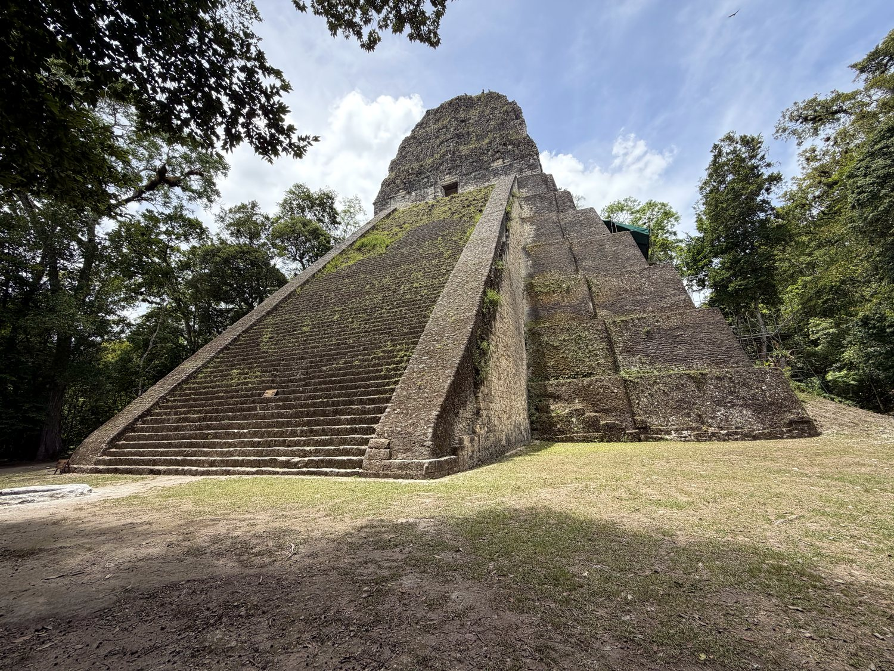
A rough drive north of Tikal lies the quieter, older site of Uaxactún, and it rewards the effort with something Tikal cannot quite offer: solitude, and the sense of a living place. The ruins here are scattered through an actual working village, so you find ancient temples sitting companionably beside modern homes. Its treasure is one of the oldest astronomical observatories in the Maya world, a low complex of temples so precisely arranged that, from the central platform, the sun rises behind a different temple at each solstice and equinox. It is a humbling reminder of how carefully these people read the sky. My own exploration of one ancient palace was cut short when I discovered its dark interior was thoroughly occupied by bats.
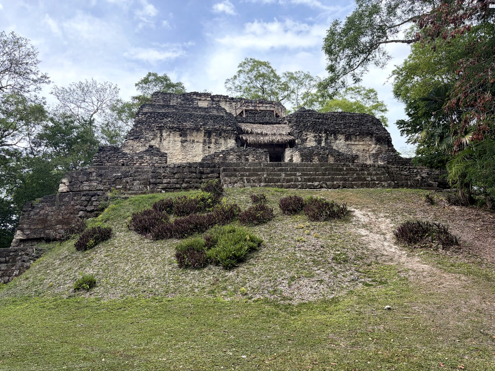
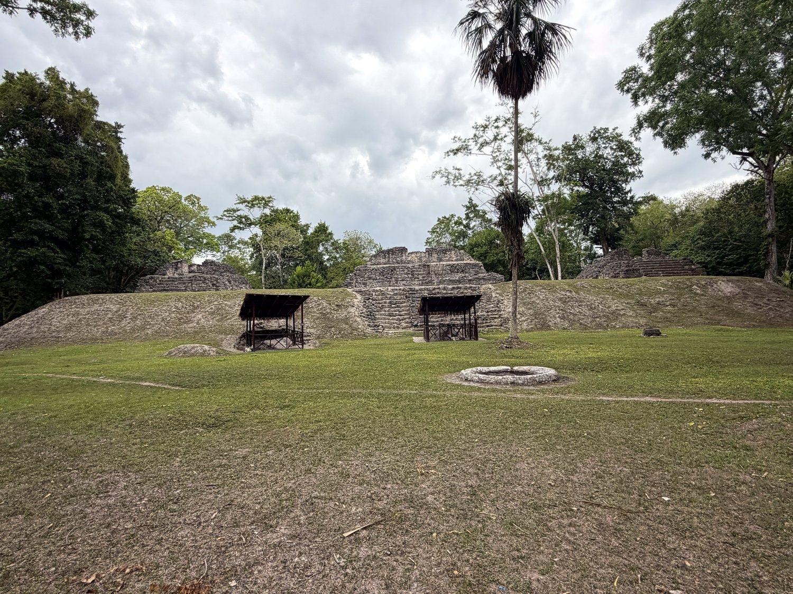
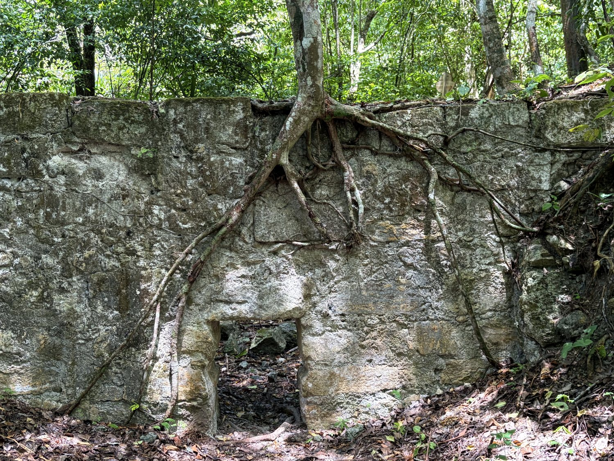
No account of Guatemala is complete without the camioneta, the country's beloved and terrifying answer to public transport. These are old American school buses, shipped south at the end of their North American lives and reborn in a riot of chrome and hand-painted color. Riding one to Antigua was a joy. The driver flung the bus down the highway with cheerful abandon whenever traffic allowed, and vendors leapt aboard at every stop to sell snacks. I fell into a long conversation with Ingrid, a kind woman in her forties in the next seat, who told me how she got married at age 14 and is about to have her fifth child. The camioneta was a perfect way to get acquainted with Guatemala’s warm (and chaotic) culture.
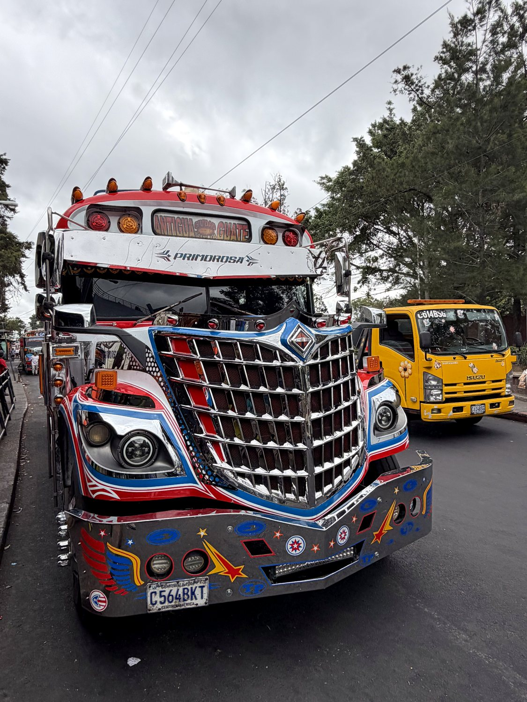
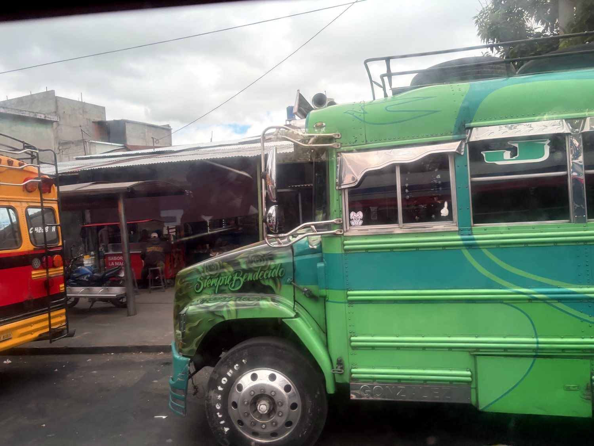